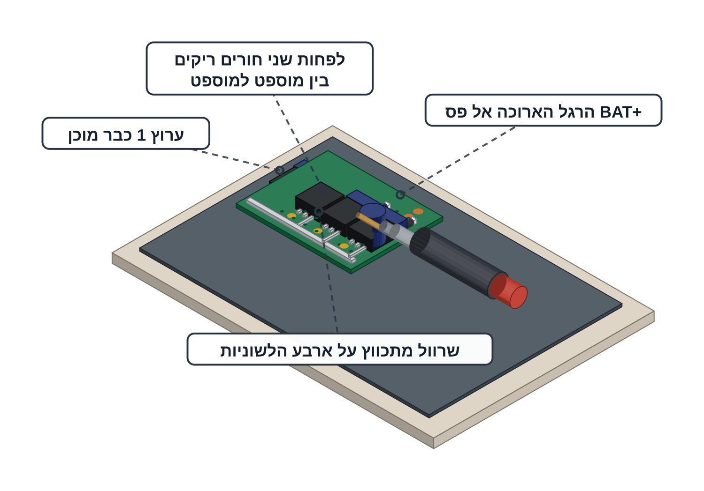

מלחימים את ערוצים 2–4 ואת הקבל
אותו ערוץ שלוש פעמים — אחר כך הקבל ובדיקה מלאה של כל הלוח.
ערוץ 1 כבר מולחם ועבר בדיקה. הידיים שלכם כבר יודעות את הסדר — הכרטיס הזה נותן את מה שחייב לצאת נכון ואת הבדיקה שמוכיחה את זה.
דיודה הפוכה היא קצר על הסוללה דרך המוספט ברגע שהשער עולה — והרכיב נשרף. הטבעת פונה אל BAT+, תמיד. ולשונית שנוגעת בלשונית מחברת שני מנועים למנוע אחד — ולכן לפחות שני חורים ריקים בין מוספט למוספט.

לאן מגיעים

מה עושים
אומרים בקול את שלושת כללי ההלחמה מפרויקט 4. רק אחר כך מדליקים את המלחם.
בכל ערוץ חוזרים על אותו סדר שעבד בערוץ 1:
בסוף כל ערוץ מסמנים בטוש ליד הפדים את שם הערוץ ואת הכיוון שלו.
ערוץ 2 — Q2 ו-D2 על הפדים M2+, M2− ו-G2. זה המנוע הימני — מסמנים M2 / G2 / RIGHT.
ערוץ 3 — Q3 ו-D3 על הפדים M3+, M3− ו-G3. זה המנוע האחורי — מסמנים M3 / G3 / BACK.
ערוץ 4 — Q4 ו-D4 על הפדים M4+, M4− ו-G4. זה המנוע השמאלי — מסמנים M4 / G4 / LEFT.
מכסים בשרוול מתכווץ את ארבע הלשוניות של המוספטים.
הלשונית היא ה-Drain של המוספט ולוח הפחמן של השלדה מוליך חשמל ויושב מילימטר מתחת ללוח.
מלחימים את הקבל 220µF על שני הפסים: הרגל הארוכה אל פס BAT+ והצד עם הפס המסומן על הגוף אל פס GND.
קבל הפוך הוא אחת משלוש הסיבות לצפצוף בין BAT+ ל-GND בבדיקה שבסוף הכרטיס.
מוסיפים שני פדים — אחד על פס BAT+ ואחד על פס GND. מהם ייצאו בהמשך שני החוטים אל הממיר MT3608.
קוראים למורה: המורה מלחים את מחבר הסוללה (PH2.0) אל פס BAT+ ואל פס GND.
זה החיבור היחיד בלוח שנושא את כל זרם הסוללה — ולכן הוא נשאר של המורה גם במסלול 2.
מכבים את המלחם ומושכים משיכה עדינה בכל חיבור חדש — שלושת הערוצים, הקבל ושני הפדים.
חיבור טוב לא זז. מה שזז — מלחימים מחדש עכשיו, לפני שמתחילים לבדוק.
אתם מחליטים מתי בודקים. אפשר להוציא את המולטימטר אחרי כל ערוץ, כמו שעשיתם בערוץ 1. אפשר גם להלחים את שלושת הערוצים ולבדוק הכול בסוף. בדיקה אחרי כל ערוץ מוצאת טעות פעם אחת במקום שלוש.
הבדיקה — ארבעת הערוצים
מולטימטר במצב רציפות — זה שמצפצף: פס BAT+ מול פס GND — אין צפצוף.
צפצוף כאן = קצר. עוצרים, לא מחברים ללוח כלום וקוראים למורה.
באותו מצב עוברים על הלשוניות של ארבעת המוספטים. בכל שלוש הבדיקות אין צפצוף:
הלשונית היא רגל ה-Drain: צפצוף בין שתי לשוניות מחבר שני מנועים למנוע אחד וצפצוף מול פס הוא קצר.
מעבירים למצב אוהם בטווח 20k ועושים שתי בדיקות על כל ארבעת הערוצים:
עוברים למצב בדיקת דיודה ובודקים את ארבע הדיודות, אחת אחרי השנייה: מחוש אדום על פד M− ומחוש שחור על פס BAT+ — בין 0.2V ל-0.35V. מחליפים מחושים — OL.
זו הבדיקה שתופסת טבעת בכיוון ההפוך — אותה בדיקה שעשיתם בערוץ 1, עכשיו על כל ארבעת הערוצים.
Continuity (beep) BAT+ <-> GND no beep tab <-> GND no beep (x4) tab <-> BAT+ no beep (x4) tab <-> tab no beep (6 pairs) Ohm, 20k range G1..G4 <-> GND 9-11 kΩ M1-..M4- <-> GND OL Diode test mode red on M- / black on BAT+ 0.2-0.35 V probes swapped OL
ארבעה ערוצים זהים על שני הפסים, לפחות שני חורים ריקים בין מוספט למוספט, ארבע טבעות דיודה פונות אל BAT+ ושרוול מתכווץ על ארבע הלשוניות.
אין צפצוף באף בדיקת רציפות, ארבעת פדי G מראים בערך 10kΩ וכל פד M− מראה OL. הלוח עדיין לא מחובר לסוללה ולא למנועים.
זה הפרויקט האחד שבו החומרה יכולה לפגוע בכם — המדחפים והסוללה. בגלל זה המורה מחזיק את שניהם, בגלל זה חובשים משקפי מגן בכל רגע שמנוע יכול להסתובב, בגלל זה הרחפן תמיד על חוט ובגלל זה כל אחד רשאי להגיד STOP. כל הכללים בכרטיסיית R1.